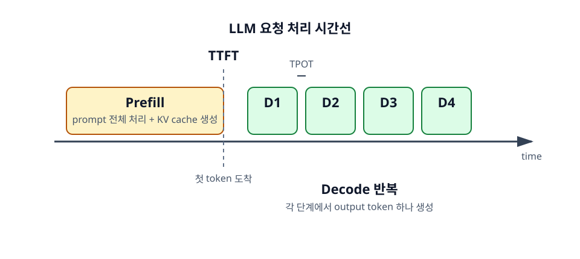

4장. Prefill과 Decode¶
LLM 추론은 하나의 과정처럼 보이지만, 성능을 분석할 때는 prefill과 decode를 반드시 구분해야 한다. Prefill은 prompt 전체를 읽고 첫 token을 만들 준비를 하는 단계다. Decode는 output token을 하나씩 생성하는 반복 단계다.
두 단계는 병목이 다르다. Prefill은 긴 입력을 한꺼번에 처리하므로 상대적으로 계산량이 크다. Decode는 매 token마다 과거 KV cache를 참조하므로 memory bandwidth와 cache 관리가 중요해진다.

학습 목표¶
- Prefill과 decode 단계를 구분한다.
- TTFT와 TPOT가 무엇을 나타내는지 이해한다.
- 두 단계의 병목 차이를 설명한다.
4.1 Prefill 단계¶
Prefill은 사용자의 prompt를 모델에 처음 넣는 단계다. Prompt 안의 token들은 이미 모두 주어져 있으므로, GPU는 이 token sequence를 비교적 병렬적으로 처리할 수 있다. 이 단계의 결과로 첫 output token을 만들 준비가 되고, 이후 decode에서 사용할 KV cache가 생성된다.
4.1.1 Prompt 전체를 한 번에 읽는 단계¶
사용자가 4,000 token짜리 prompt를 보냈다면, prefill은 이 4,000 token 전체를 처리한다. 이때 self-attention은 prompt 안의 token들이 서로를 참조하게 만든다. 긴 문서 요약이나 RAG 요청에서 첫 응답이 늦어지는 가장 흔한 이유가 여기에 있다.
Prefill은 output을 여러 token 생성하는 단계가 아니다. 답변 생성을 시작하기 전에 입력을 읽는 단계다. 그래서 prompt가 길어지면 첫 token이 나오기 전 대기 시간이 길어진다.
4.1.2 KV cache를 처음 생성하는 단계¶
Prefill의 또 다른 중요한 역할은 KV cache를 만드는 것이다. 각 layer에서 prompt token들의 key와 value를 계산해 저장한다. 이후 decode 단계에서 새 token이 과거 context를 참조할 때 이 cache를 사용한다.
KV cache가 없다면 decode 때마다 prompt 전체를 다시 계산해야 한다. 그러면 output token 하나를 만들 때마다 처음부터 모든 token을 다시 처리해야 하므로 비효율적이다. KV cache는 이 반복 계산을 줄이는 핵심 장치다.
4.1.3 TTFT와 prefill latency¶
TTFT(Time To First Token)는 요청을 보낸 뒤 첫 output token이 도착하기까지의 시간이다. Streaming API를 사용할 때 사용자가 가장 먼저 체감하는 지표다. TTFT에는 네트워크 시간, queueing 시간, tokenization 시간, prefill 시간, 첫 decode 시간이 포함될 수 있다.
Prompt가 긴 요청에서 TTFT가 증가한다면 prefill latency를 의심해야 한다. 이때 해결책은 단순히 GPU를 늘리는 것만이 아니다. Prompt를 줄이거나, prefix caching을 사용하거나, chunked prefill을 적용하거나, long-context 요청을 별도 worker로 분리하는 방식도 고려해야 한다.
4.2 Decode 단계¶
Decode는 output token을 하나씩 생성하는 단계다. 첫 token을 만든 뒤에는 그 token을 context에 추가하고, 다음 token을 만든다. 이 반복은 stop token이 나오거나 max output token에 도달할 때까지 계속된다.
4.2.1 답변을 한 token씩 생성하는 단계¶
Autoregressive 모델에서는 다음 token이 이전 output token에 의존한다. 따라서 output token 100개를 생성하려면 decode loop가 대략 100번 반복된다. GPU 내부의 행렬 연산은 병렬적이지만, token 생성 순서는 순차적이다.
이 때문에 긴 답변은 시간이 오래 걸린다. Streaming을 사용하면 사용자는 중간 결과를 볼 수 있지만, 서버 입장에서는 여전히 token을 하나씩 생성하고 있다.
4.2.2 매 token마다 과거 KV cache를 참조하는 구조¶
Decode에서 새 token의 Query는 과거 모든 token의 Key, Value를 참조한다. 이때 과거 token이 prompt에서 온 것인지, 이전 output에서 온 것인지는 중요하지 않다. 모두 현재 context의 일부다.
Context가 길수록 참조해야 할 KV cache도 길어진다. 그래서 긴 대화나 긴 문서 기반 요청은 prefill만 느린 것이 아니라 decode에서도 부담이 커질 수 있다.
4.2.3 TPOT와 inter-token latency¶
TPOT(Time Per Output Token)는 output token 하나를 생성하는 데 걸리는 평균 시간이다. Inter-token latency라고도 부른다. 사용자는 streaming 응답에서 token이 얼마나 빠르게 이어지는지로 TPOT를 체감한다.
TPOT가 나쁘면 첫 token은 빨리 나오더라도 답변이 천천히 흘러나온다. 이 경우 decode 병목, KV cache 접근 비용, batch size, memory bandwidth, GPU utilization을 함께 봐야 한다.
4.3 Prefill과 decode의 병목 차이¶
Prefill과 decode는 같은 모델을 실행하지만 성격이 다르다. 이 차이를 모르면 잘못된 튜닝을 하기 쉽다. 예를 들어 첫 응답이 느린 문제에 decode 최적화만 적용하거나, token streaming이 느린 문제에 prompt 압축만 적용하면 효과가 제한적일 수 있다.
4.3.1 Prefill은 상대적으로 compute-heavy하다¶
Prefill은 prompt 전체 token에 대해 많은 행렬 연산과 attention 계산을 수행한다. 특히 긴 sequence에서는 attention 계산량이 커진다. GPU의 연산 성능을 잘 활용할 수 있지만, sequence가 길수록 전체 처리 시간이 늘어난다.
FlashAttention 같은 최적화는 prefill에서 특히 중요하다. Attention 결과는 유지하면서 메모리 접근을 줄여 긴 sequence 처리 효율을 높인다.
4.3.2 Decode는 상대적으로 memory-bandwidth-heavy하다¶
Decode는 매 단계에서 새 token 하나를 처리하지만, 과거 KV cache 전체를 참조해야 한다. 새로 계산하는 token 수는 적어도 읽어야 하는 cache가 많아질 수 있다. 이 때문에 decode는 연산량보다 memory bandwidth나 cache layout에 민감해질 수 있다.
Batch size가 커지면 여러 요청의 decode를 함께 처리해 GPU 활용률을 높일 수 있다. 그러나 batch가 너무 커지면 KV cache 메모리 사용량이 늘고 latency가 나빠질 수 있다.
4.3.3 두 단계를 구분해야 튜닝 방향이 보인다¶
성능 문제를 보면 먼저 TTFT와 TPOT를 나누어야 한다.
- TTFT가 나쁘다: prompt 길이, queueing, tokenization, prefill 병목, prefix caching 여부를 본다.
- TPOT가 나쁘다: decode 병목, KV cache 접근, batch size, memory bandwidth를 본다.
- 둘 다 나쁘다: 요청량, scheduler, GPU memory pressure, 모델 크기, 병렬화 설정을 함께 본다.
이 구분은 이후 serving 엔진을 다룰 때 계속 등장한다. Continuous batching, chunked prefill, disaggregated prefill/decode는 모두 prefill과 decode의 성격 차이를 이용하는 기법이다.
정리¶
Prefill은 prompt 전체를 처리하고 KV cache를 만드는 단계이며, TTFT에 큰 영향을 준다. Decode는 output token을 하나씩 생성하며, TPOT와 사용자 체감 streaming 속도에 영향을 준다.
LLM 추론 최적화의 첫 단계는 문제가 prefill에 가까운지 decode에 가까운지 구분하는 것이다. 이 구분이 있어야 prompt 최적화, KV cache 관리, batching, 병렬화 전략을 올바르게 선택할 수 있다.
점검 질문¶
- 첫 토큰이 늦게 나오는 문제와 이후 토큰이 느리게 나오는 문제는 어떻게 구분하는가?
- 긴 prompt는 주로 어떤 단계에 영향을 주는가?
다음 장으로¶
다음 장에서는 KV cache를 집중적으로 다룬다. KV cache는 decode를 빠르게 만드는 장치이면서, long-context와 동시 요청에서 GPU 메모리를 압박하는 핵심 원인이다.